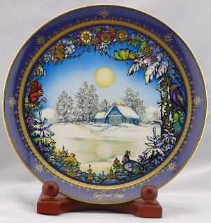
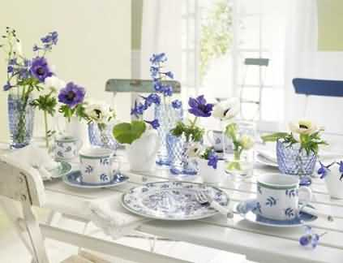
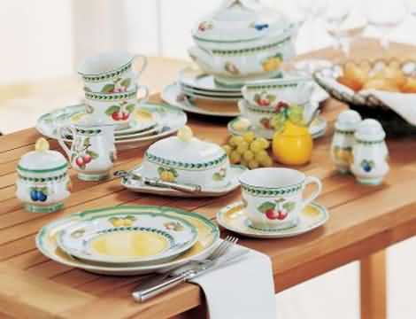

261年悠久历史的德国瓷器第一品牌Villeroy & Boch，自公元1748年于德法边境小镇奥敦勒堤设置第一间陶瓷工厂。Boch家族企业的创办人Francois Boch 在公元1748年时，率同三个儿子，于法国奥敦勒堤创建首间陶瓷工厂。当时正值欧洲制作陶瓷技术于德国发明不久，整个陶瓷市场正处于方兴未艾的阶段。Boch家族掌握到最佳时机，得以令其企业规模迅速开展。而在同时期，另一陶瓷制造商Villeroy家族也正逐渐兴起，在创办人Nicolas Villeroy 的带领下，于Saar河畔的Wallerfangen 设置陶瓷厂。除了自工业革命发源地的英国聘雇技工之外，并大量引进新的制作技术。
公元1767年欧洲政局动荡不安，为稳定在卢森堡的市场供需，Boch家族便在七泉Septfontainea设置第二家陶瓷工厂。另一方面，由于产品的质量优良，得到当时奥地利王国 女王 Maria Theresa的青睐，并被授与于其产品上印制「皇家制造商」的殊荣。对Boch家族企业无形中又多加了一份肯定。
公元1836年，来自于英国方面，挟带工业革命新技术及大量制造成本低廉的价格优势的挑战，迫使Boch家族及Villeroy家族这两家在当时称得上欧陆前几大的瓷器制造商必须 寻求突破。在双方面对彼此的欣赏及钦佩的基础上，两家决定合并一同抵抗来自英方的挑战，所以今日为众人所熟悉的品牌 Villeroy & Boch就此诞生。几年之后，双方的关系因为婚姻结合的缘故而更加稳固，传为历史佳话。
Villeroy&Boch以其无穷创意，树立了享誉国际的品牌，Villeroy & Boch 的设计师们以超凡创意，艺术眼光及精巧工艺，致力为Villeroy & Boch 名下每一产品刻铸举世无双的 独特个人风格。这种难能可贵的瓷艺经验是源自世代相传的宗旨：将最上乘的材料，精雕细琢的工艺及先进科技共冶一炉，以臻完美。所有陶瓷、水晶及刀叉保证可安全放入洗碗机洗涤。而到今天，Villeroy & Boch的第八代传人仍秉持前人的精神，坚持探索、创新及进取的 精神，精益求精的努力于产品的开发制造上，以求能够制作出符合社会大众各个阶层需求的商品。相信在未来Villeroy & Boch仍为瓷艺流行世界的领导者。
1998年Villeroy & Boch 步入二百五十周年，在全球举行一连串大型庆祝活动，除了推出限量发售的各款优美作品外，更有一系列具收藏价值的珍藏品。
Villeroy & Boch更特别在亚洲举办250周年巡回博物馆珍藏展，展出的精品均出自德国Mettlach陶瓷博物馆的珍藏，藉以纪念这段光辉的历史。